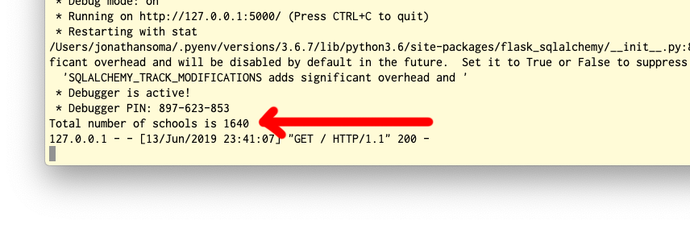
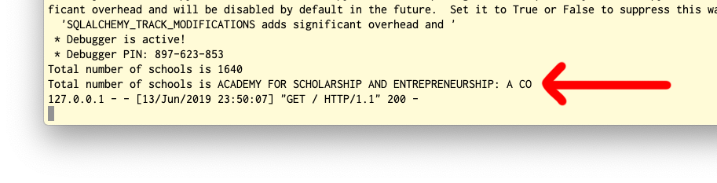
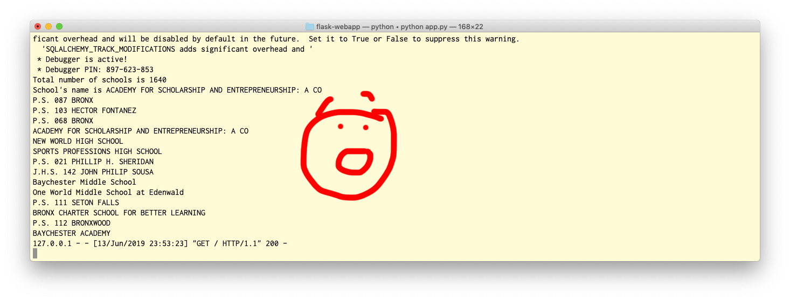

4 Connecting Flask to SQLite
Now that we have our Flask app kind of set up and our SQLite database ready to go, it’s time to make them talk to each other.
4.1 Speaking SQL
If you’ve used things like sqlite3 or pg8000 to talk to databases before, you know it can really be a pain to wrangle your data. It’s even worse when working with Flask. Brace yourself and take a look at this awesome “simple example of how you can use SQLite 3 with Flask”
DATABASE = '/path/to/database.db'
def get_db():
db = getattr(g, '_database', None)
if db is None:
db = g._database = sqlite3.connect(DATABASE)
return db
@app.teardown_appcontext
def close_connection(exception):
db = getattr(g, '_database', None)
if db is not None:
db.close()Oof, eef, aaf, this “simple example” it hurts parts of my body I didn’t even know I had.
And then under the header “Easy Querying” it shows you this real baller piece of work:
def make_dicts(cursor, row):
return dict((cursor.description[idx][0], value)
for idx, value in enumerate(row))
db.row_factory = make_dictsDear Reader, my Sweet Friend, that’s horrible. That’s a fate worse than ten or twenty unimaginable terrors. So we ain’t gonna do it. We’re gonna do something else.
We’re gonna do something better.
4.2 Introduction to ORMs
Once upon a time there were databases, and there was SQL, and there were people who loved writing SQL. SQL is cool, SQL is great!
Then everyone else was invented, and they didn’t like writing SQL, they just liked writing Python. So the Gods invented ORMs, which basically mean “instead of writing SQL you’ll just write Python and the ORM will talk to the database for you.”
Now everyone can be happy!
ORM means Object-relational mapping, which doesn’t mean anything to anyone and no one will ever ask you about that
There are a handful of ORMs that work for Python, and plenty that work with Flask. Peewee is one that’s pretty simple to get running with, but it isn’t as popular as SQLAlchemy. SQLAlchemy is… an acquired taste, but it’s very popular, and because it’s so popular I am absolutely certain that my distaste for SQLAlchemy is because I’m too stupid to understand it**, so we’re going to use it for this example.
** Ever since I was a little baby I was programming in a language called Ruby and using an ORM called ActiveRecord. Ruby is a lot like Python, but ActiveRecord is not like SQLAlchemy: ActiveRecord is a beautiful angel sent from heaven to cure the world of all ills. The world - sadly, predictably - just doesn’t listen.
4.2.1 Setting up SQLAlchemy
First, before we even look at SQLAlchemy, let’s install a lil’ package that will connect SQLAlchemy to Flask. It’s called - wait for it! - flask_sqlalchemy. Install as such:
pip install flask_sqlalchemyIt’ll also automatically install SQLAlchemy itself.
To use it in our app, you’ll also need to add the appropriate import. At the top of app.py, near where you’re importing all the Flask bits and pieces, add the following:
# app.py
from flask import Flask
from flask import render_template
from flask_sqlalchemy import SQLAlchemyStandard workhorse stuff, nothing too crazy.
4.2.2 Adding our Model
Now the real work begins! We need to define our Model, which is the Python version of our SQL table. Every table gets a model, and we use that model to play around with its associated table from Python. (Although we only have one table in this case, so we’ll only have one model)
Going back to our code - right after we make our Flask app with app = Flask(__name__), you’ll want to tell SQLAlchemy everything important about the database and its tables. It’ll look like this:
app = Flask(__name__)
app.config['SQLALCHEMY_DATABASE_URI'] = 'sqlite:///schools.sqlite3'
db = SQLAlchemy(app)
db.Model.metadata.reflect(db.engine)
class School(db.Model):
__tablename__ = 'schools-geocoded'
__table_args__ = { 'extend_existing': True }
LOC_CODE = db.Column(db.Text, primary_key=True) Let’s take it line-by-line to get an idea of what’s going on (or a-few-lines by a-few-lines).
First off, you tell the app where to find the database and initialize SQLAlchemy:
app.config['SQLALCHEMY_DATABASE_URI'] = 'sqlite:///schools.sqlite3'
db = SQLAlchemy(app)Usually when you’re working with SQLAlchemy, you have to make a nice long list of every column in the table, and whether it’s an integer, text, float, whatever. This table has about sixteen thousand rows, so you’d probably perish from old age before we finished up.
Luckily, there’s an option to tell SQLALchemy that we’re way too lazy to do that, and for every model it should just look at the columns that already exist in the table. This is called reflecting!
To tell SQLAlchemy we’re lazy and it should teach itself about the database, we use this line:
db.Model.metadata.reflect(db.engine)It’s always the same, never changes. A million tables, weird names, etc etc, nothing affects it. If you don’t want to list all those columns out, you’ll be using that line.
Now we’re finally ready to make the model!!!!! We need to tell the model four things:
- Its name. In this case, we’re calling it
School, because it’s… a list of schools. - The table name to both find the data in and to learn the columns from. That’s
schools-geocoded, because TablePlus took the name right from the CSV file and didn’t give us any other choice. - A weird line about
extend_existing, which is always exactly the same. It just means “hey, we’re going to change something about the table,” because… - …even though it learn the columns by reflecting, SQLAlchemy needs a unique column to be able to keep each row separate, like an id. In this case, it’s the
LOC_CODEcolumn. This is called the “primary key.”
That final bit of code all together looks like this:
class School(db.Model):
__tablename__ = 'schools-geocoded'
__table_args__ = { 'extend_existing': True }
LOC_CODE = db.Column(db.Text, primary_key=True) Give your page a refresh to make sure you don’t have any typos or other little issues, and then we’ll charge ahead to actually using this model.
4.3 Using SQLAlchemy
We don’t know how to make our database talk to the web page yet, so we’re going to cheat a little bit. Let’s edit the /about route to make it print something out:
@app.route("/")
def hello():
print("Total number of schools is", School.query.count())
return render_template("index.html")Refresh the page and you’ll see…. nothing changed? But pop on over to your command line, and you’ll see a secret little line hiding in the debug output:

Total number of schools is 1640
127.0.0.1 - - [13/Jun/2019 23:41:07] "GET / HTTP/1.1" 200 -When you use print in the Flask app, it doesn’t print to the web page. That’s the render_template part. Instead, print prints to the command line. It’s totally useless for showing things to the user, but a nice cheat to check things and help us debug.
Where’d that 1640 come from? School.query.count()! We used our model - School - to visit the database, build a new query, and count the number of rows in the table.
That’s not SQL, right? The SQL would be something like this:
SELECT COUNT(*) FROM `geoceoded-schools`But because we’re using an SQLAlchemy, we write Python, not SQL. SQLAlchemy takes care of the translation to SQL and just gives us the result.
For example, we can do a WHERE query - filtering our data - by using filter_by. It might like this:
>>> peter = User.query.filter_by(username='peter').first()
>>> peter.id
2
>>> peter.email
'peter@example.org'You can find more examples in the documentation. To play around a little, let’s try to find a specific school and print out its name.
@app.route("/")
def hello():
print("Total number of schools is", School.query.count())
school = School.query.filter_by(LOC_CODE='X270').first()
print("School's name is", school.SCHOOLNAME)
return render_template("index.html")Refresh the page, check the terminal to see the output of your print statements. Should look something like this:

* Debugger PIN: 897-623-853
Total number of schools is 1640
School's name is ACADEMY FOR SCHOLARSHIP AND ENTREPRENEURSHIP: A CO
127.0.0.1 - - [13/Jun/2019 23:50:07] "GET / HTTP/1.1" 200 -What comes back from the database is that one row where LOC_CODE='X270' - we only got one because we asked for .first(). It works just like a normal variable, kind of like a dictionary that you don’t need ['whatever'] for. Instead, you can just ask for each column with a period.
Since SCHOOLNAME is the column with the school’s name in it, we can just ask for school.SCHOOLNAME and it will print right out.
If we want to get fancier, we can also select multiple rows with .all().
@app.route("/")
def hello():
print("Total number of schools is", School.query.count())
school = School.query.filter_by(LOC_CODE='X270').first()
print("School's name is", school.SCHOOLNAME)
zip_schools = School.query.filter_by(ZIP='10466').all()
for zip_school in zip_schools:
print(zip_school.SCHOOLNAME)
return render_template("index.html")Since we asked for .all() what comes back is similar to a list. That means we need to use a loop if we want to print all their names out, with the same .SCHOOLNAME technique to get the value from the SCHOOLNAME column.
The results are nice and long:

Total number of schools is 1640
School's name is ACADEMY FOR SCHOLARSHIP AND ENTREPRENEURSHIP: A CO
P.S. 087 BRONX
P.S. 103 HECTOR FONTANEZ
P.S. 068 BRONX
ACADEMY FOR SCHOLARSHIP AND ENTREPRENEURSHIP: A CO
NEW WORLD HIGH SCHOOL
SPORTS PROFESSIONS HIGH SCHOOL
P.S. 021 PHILLIP H. SHERIDAN
J.H.S. 142 JOHN PHILIP SOUSA
Baychester Middle School
One World Middle School at Edenwald
P.S. 111 SETON FALLS
BRONX CHARTER SCHOOL FOR BETTER LEARNING
P.S. 112 BRONXWOOD
BAYCHESTER ACADEMY
127.0.0.1 - - [13/Jun/2019 23:53:23] "GET / HTTP/1.1" 200 -And that’s how an ORM works! Kind of, partially, somewhat, anyway.
Yes, we have to memorize a new weird set of ways to do things (why did WHERE become filter_by?), but I promise working with SQL in Python is a tiny pile of ashes we don’t want to play in.
4.3.0.1 Ready to go?
We’ve been flexing our sweet new SQLAlchemy ORM, testing our skills at querying and counting and WHEREing without WHEREs, but how about we actually make this useful? In the next section we’ll take a look at how we can put this data on the actual web page.